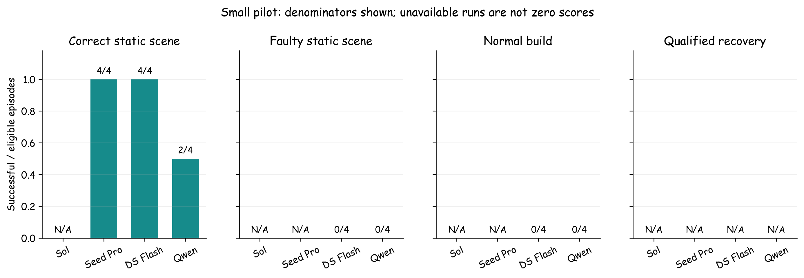
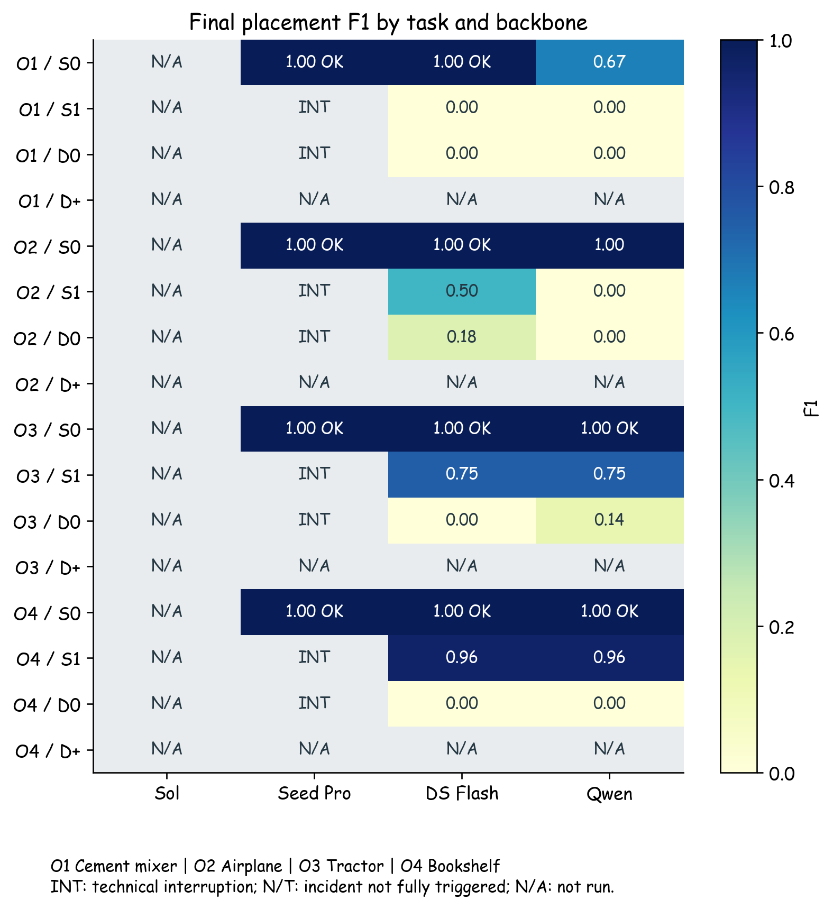
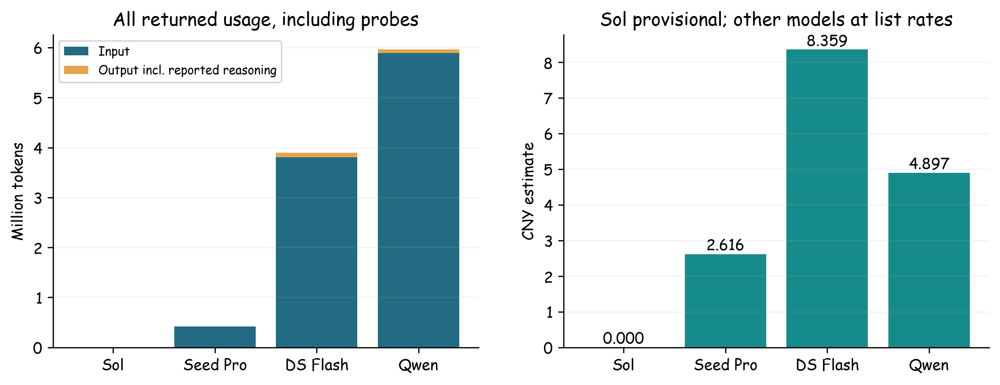
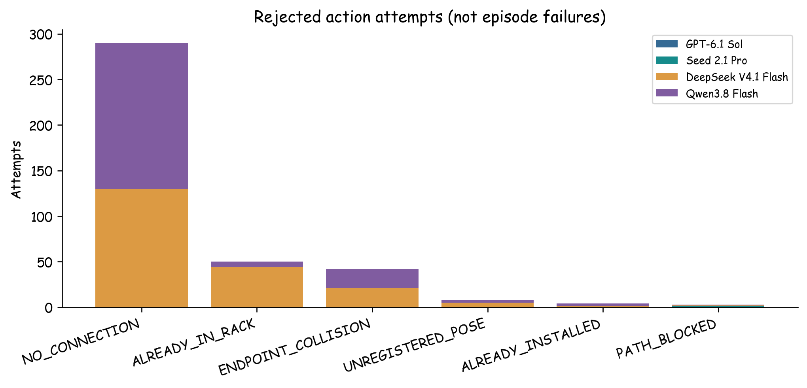
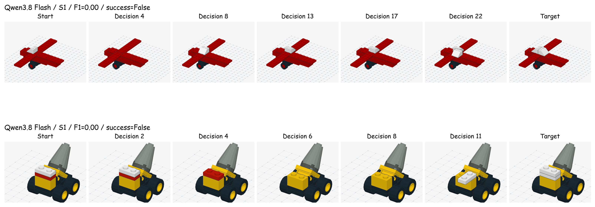

# 四模型小批量实验：结果与用量 [逐步回放](http://127.0.0.1:8831/ark) · [完整指标 JSON](metrics.json) · [预先登记题单](plan.json) **这是一批流程试验，不是全库成绩或模型排名。** 每个条件只跑一次。静态现场也由同一视觉 Agent 操作，当前表格不代表一次性静态问答。 所有动作由真实 API 模型决定。正常拼装成功后才进入同物件事故分支；未运行、API 中断、截断、预算停止不当作拼装失败。 ## 1. 结果汇总 | Backbone 版本 | 路由 | 请求模型/接入点 | 接口预检 | |---|---|---|---| | ark/gpt-6-1-sol-260929 | Ark | ep-20261030153523-5bbwh | API_FORBIDDEN | | ark/doubao-seed-2-1-pro-260915 | Ark | ep-20261030163735-8wv82 | 通过（运行仍可能限流） | | ark/deepseek-v4-1-flash-261017 | Ark | ep-20261029112022-nvzlm | 通过（运行仍可能限流） | | qwen/qwen3.8-flash | Aliyun | qwen3.8-flash | 通过（运行仍可能限流） | | 物件 | 完整待拼模块件数 | 静态阶段目标件数 | 长度组 | 静态错误 | 预设动态错误 | |---|---|---|---|---|---| | 搅拌车收尾模块 | 3 | 2 | short | buried-repair | buried-repair | | 飞机收尾模块 | 8 | 7 | medium | missing | missing | | 拖拉机收尾模块 | 12 | 4 | medium | offset | offset | | 四层书架 | 21 | 14 | long | wrong-color | multiple | 长度组只用于覆盖不同规模，尚不是经过真人和模型表现验证的难度等级。当前批次使用 v2 输入；收尾后的 v3 输入修正没有重新调用模型或改写这些成绩。 | 模型 / 路由 | 静态正常现场 | 静态故障 | 正常拼装 | 合格事故修复 | 技术中断 | |---|---|---|---|---|---| | GPT-6.1 Sol / Ark | —（无有效题） | —（无有效题） | —（无有效题） | —（无有效题） | 0 | | Seed 2.1 Pro / Ark | 4/4 | —（无有效题） | —（无有效题） | —（无有效题） | 8 | | DeepSeek V4.1 Flash / Ark | 4/4 | 0/4 | 0/4 | —（无有效题） | 0 | | Qwen3.8 Flash / Aliyun | 2/4 | 0/4 | 0/4 | —（无有效题） | 0 | 表内为成功数 / 有效运行数。事故分母还要求正常前置通过、事故全部真实发生。格式错误保留在端到端结果中；只分析拆装能力时另看 `assemblyEligible`。 ### 指标是什么意思 | 指标 | 怎么算、说明什么 | |---|---| | 完成率 | 合法最终结构与目标等价，并明确调用 finish，才算成功。API 中断不进入能力分母。 | | 结构 F1 | 综合零件种类、颜色、位置是否正确：2TP/(2TP+FP+FN)。只算可操作部分，固定背景不加分。 | | 正常现场误动 | 本来正确的 S0 题中，是否执行了至少一次被接受的拆装。多观察不算误动。 | | 错误减少率 | 1 − 最后错误残差/初始错误残差。负数表示越修越错；初始无错时不适用。 | | 正确部分损坏 | 起点正确的部件，到最后还有多少被弄错或拆掉。 | | 合法动作率 | 被环境接受的拆装次数/格式完整的拆装尝试。与整题成功率分开。 | | 合格事故修复率 | 同题正常拼装成功，且事故分支所有安排的事故都生效，才进入修复分母。 | | 分次事故恢复 | 每次事故到下一次事故之前是否恢复、多久恢复、恢复后能否保持。详情保留在 eventWindows。 | | 观察与查页 | 新现场图、候选位置页、说明书页分别统计；不是简单把所有工具调用当观察。 | | Token / 时间 / 费用 | 输入含图片编码，输出已包含服务商报告的推理 token，不能再加一次。API 耗时含网络，不含客户端限流等待。 | | GT 步数 | 一条已验证的参考路线，供检查与对照；不是唯一顺序，也不是最短路线证明。 |  ## 2. 逐题结果 | 物件 | 模型 | 题型 | 结果 | F1 | 轮数 | 合法动作/尝试 | 新现场图 | 候选/说明页 | GT动作 | 事故触发 | |---|---|---|---|---|---|---|---|---|---|---| | 搅拌车收尾模块 | Qwen3.8 Flash | 静态正常现场 | [未完成](http://127.0.0.1:8831/ark?run=agent-static-qwen-qwen3-8-flash-20261030-195128-58a8) | 0.667 | 39 | 2/6 | 0 | 14/14 | 0 | 不适用 | | 搅拌车收尾模块 | Qwen3.8 Flash | 静态故障现场 | [未完成](http://127.0.0.1:8831/ark?run=agent-static-qwen-qwen3-8-flash-20261030-195331-60d3) | 0.000 | 11 | 3/5 | 2 | 3/0 | 4 | 不适用 | | 搅拌车收尾模块 | Qwen3.8 Flash | 正常拼装 | [未完成](http://127.0.0.1:8831/ark?run=agent-normal-qwen-qwen3-8-flash-20261030-195421-0ee3) | 0.000 | 30 | 3/19 | 1 | 7/2 | 3 | 不适用 | | 飞机收尾模块 | Qwen3.8 Flash | 静态正常现场 | [未完成](http://127.0.0.1:8831/ark?run=agent-static-qwen-qwen3-8-flash-20261030-195751-da2a) | 1.000 | 62 | 0/5 | 2 | 31/23 | 0 | 不适用 | | 飞机收尾模块 | Qwen3.8 Flash | 静态故障现场 | [未完成](http://127.0.0.1:8831/ark?run=agent-static-qwen-qwen3-8-flash-20261030-200242-859a) | 0.000 | 22 | 5/15 | 2 | 3/0 | 1 | 不适用 | | 飞机收尾模块 | Qwen3.8 Flash | 正常拼装 | [未完成](http://127.0.0.1:8831/ark?run=agent-normal-qwen-qwen3-8-flash-20261030-200408-caf0) | 0.000 | 68 | 1/57 | 2 | 7/2 | 8 | 不适用 | | 拖拉机收尾模块 | Qwen3.8 Flash | 静态正常现场 | [成功](http://127.0.0.1:8831/ark?run=agent-static-qwen-qwen3-8-flash-20261030-200958-c56d) | 1.000 | 13 | 0/0 | 12 | 0/0 | 0 | 不适用 | | 拖拉机收尾模块 | Qwen3.8 Flash | 静态故障现场 | [未完成](http://127.0.0.1:8831/ark?run=agent-static-qwen-qwen3-8-flash-20261030-201033-f7f3) | 0.750 | 42 | 0/0 | 1 | 3/37 | 2 | 不适用 | | 拖拉机收尾模块 | Qwen3.8 Flash | 正常拼装 | [未完成](http://127.0.0.1:8831/ark?run=agent-normal-qwen-qwen3-8-flash-20261030-201351-3e4b) | 0.143 | 92 | 2/71 | 3 | 16/1 | 12 | 不适用 | | 四层书架 | Qwen3.8 Flash | 静态正常现场 | [成功](http://127.0.0.1:8831/ark?run=agent-static-qwen-qwen3-8-flash-20261030-202510-46ad) | 1.000 | 6 | 0/0 | 2 | 0/3 | 0 | 不适用 | | 四层书架 | Qwen3.8 Flash | 静态故障现场 | [未完成](http://127.0.0.1:8831/ark?run=agent-static-qwen-qwen3-8-flash-20261030-202556-ebf3) | 0.963 | 13 | 1/8 | 1 | 3/0 | 2 | 不适用 | | 四层书架 | Qwen3.8 Flash | 正常拼装 | [未完成](http://127.0.0.1:8831/ark?run=agent-normal-qwen-qwen3-8-flash-20261030-202732-06cb) | 0.000 | 146 | 0/25 | 0 | 54/64 | 21 | 不适用 | | 搅拌车收尾模块 | DeepSeek V4.1 Flash | 静态正常现场 | [成功](http://127.0.0.1:8831/ark?run=agent-static-ark-deepseek-v4-1-flash-261017-20261030-201227-690e) | 1.000 | 2 | 0/0 | 1 | 0/0 | 0 | 不适用 | | 搅拌车收尾模块 | DeepSeek V4.1 Flash | 静态故障现场 | [未完成](http://127.0.0.1:8831/ark?run=agent-static-ark-deepseek-v4-1-flash-261017-20261030-201236-b4d1) | 0.000 | 15 | 2/8 | 4 | 2/0 | 4 | 不适用 | | 搅拌车收尾模块 | DeepSeek V4.1 Flash | 正常拼装 | [未完成](http://127.0.0.1:8831/ark?run=agent-normal-ark-deepseek-v4-1-flash-261017-20261030-201422-3910) | 0.000 | 40 | 3/23 | 10 | 7/0 | 3 | 不适用 | | 飞机收尾模块 | DeepSeek V4.1 Flash | 静态正常现场 | [成功](http://127.0.0.1:8831/ark?run=agent-static-ark-deepseek-v4-1-flash-261017-20261030-201908-96f9) | 1.000 | 2 | 0/0 | 1 | 0/0 | 0 | 不适用 | | 飞机收尾模块 | DeepSeek V4.1 Flash | 静态故障现场 | [未完成](http://127.0.0.1:8831/ark?run=agent-static-ark-deepseek-v4-1-flash-261017-20261030-201928-e87a) | 0.500 | 9 | 1/4 | 2 | 2/0 | 1 | 不适用 | | 飞机收尾模块 | DeepSeek V4.1 Flash | 正常拼装 | [未完成](http://127.0.0.1:8831/ark?run=agent-normal-ark-deepseek-v4-1-flash-261017-20261030-202021-53f2) | 0.182 | 68 | 3/45 | 13 | 9/1 | 8 | 不适用 | | 拖拉机收尾模块 | DeepSeek V4.1 Flash | 静态正常现场 | [成功](http://127.0.0.1:8831/ark?run=agent-static-ark-deepseek-v4-1-flash-261017-20261030-202839-d7a8) | 1.000 | 3 | 0/0 | 2 | 0/0 | 0 | 不适用 | | 拖拉机收尾模块 | DeepSeek V4.1 Flash | 静态故障现场 | [未完成](http://127.0.0.1:8831/ark?run=agent-static-ark-deepseek-v4-1-flash-261017-20261030-202852-a3ec) | 0.750 | 23 | 2/13 | 7 | 2/0 | 2 | 不适用 | | 拖拉机收尾模块 | DeepSeek V4.1 Flash | 正常拼装 | [未完成](http://127.0.0.1:8831/ark?run=agent-normal-ark-deepseek-v4-1-flash-261017-20261030-203159-2a1b) | 0.000 | 92 | 0/59 | 14 | 6/12 | 12 | 不适用 | | 四层书架 | DeepSeek V4.1 Flash | 静态正常现场 | [成功](http://127.0.0.1:8831/ark?run=agent-static-ark-deepseek-v4-1-flash-261017-20261030-204357-71b1) | 1.000 | 2 | 0/0 | 1 | 0/0 | 0 | 不适用 | | 四层书架 | DeepSeek V4.1 Flash | 静态故障现场 | [未完成](http://127.0.0.1:8831/ark?run=agent-static-ark-deepseek-v4-1-flash-261017-20261030-204414-5383) | 0.963 | 5 | 1/1 | 2 | 1/0 | 2 | 不适用 | | 四层书架 | DeepSeek V4.1 Flash | 正常拼装 | [未完成](http://127.0.0.1:8831/ark?run=agent-normal-ark-deepseek-v4-1-flash-261017-20261030-204455-03e7) | 0.000 | 146 | 0/61 | 11 | 15/13 | 21 | 不适用 | | 搅拌车收尾模块 | Seed 2.1 Pro | 静态正常现场 | [成功](http://127.0.0.1:8831/ark?run=agent-static-ark-doubao-seed-2-1-pro-260915-20261030-201247-213d) | 1.000 | 1 | 0/0 | 0 | 0/0 | 0 | 不适用 | | 搅拌车收尾模块 | Seed 2.1 Pro | 静态故障现场 | [API 中断](http://127.0.0.1:8831/ark?run=agent-static-ark-doubao-seed-2-1-pro-260915-20261030-201256-f928) | 0.500 | 4 | 0/1 | 1 | 0/1 | 4 | 不适用 | | 搅拌车收尾模块 | Seed 2.1 Pro | 正常拼装 | [API 中断](http://127.0.0.1:8831/ark?run=agent-normal-ark-doubao-seed-2-1-pro-260915-20261030-201803-8599) | 0.000 | 5 | 0/0 | 0 | 0/3 | 3 | 不适用 | | 飞机收尾模块 | Seed 2.1 Pro | 静态正常现场 | [成功](http://127.0.0.1:8831/ark?run=agent-static-ark-doubao-seed-2-1-pro-260915-20261030-202424-da43) | 1.000 | 3 | 0/0 | 1 | 0/1 | 0 | 不适用 | | 飞机收尾模块 | Seed 2.1 Pro | 静态故障现场 | [API 中断](http://127.0.0.1:8831/ark?run=agent-static-ark-doubao-seed-2-1-pro-260915-20261030-202810-7ed9) | 0.667 | 2 | 0/0 | 0 | 0/0 | 1 | 不适用 | | 飞机收尾模块 | Seed 2.1 Pro | 正常拼装 | [API 中断](http://127.0.0.1:8831/ark?run=agent-normal-ark-doubao-seed-2-1-pro-260915-20261030-203034-f1ca) | 0.000 | 5 | 0/0 | 1 | 0/2 | 8 | 不适用 | | 拖拉机收尾模块 | Seed 2.1 Pro | 静态正常现场 | [成功](http://127.0.0.1:8831/ark?run=agent-static-ark-doubao-seed-2-1-pro-260915-20261030-203649-0cb3) | 1.000 | 1 | 0/0 | 0 | 0/0 | 0 | 不适用 | | 拖拉机收尾模块 | Seed 2.1 Pro | 静态故障现场 | [API 中断](http://127.0.0.1:8831/ark?run=agent-static-ark-doubao-seed-2-1-pro-260915-20261030-203801-8dee) | 0.750 | 7 | 0/0 | 4 | 0/0 | 2 | 不适用 | | 拖拉机收尾模块 | Seed 2.1 Pro | 正常拼装 | [API 中断](http://127.0.0.1:8831/ark?run=agent-normal-ark-doubao-seed-2-1-pro-260915-20261030-204644-9325) | 0.000 | 4 | 0/0 | 1 | 0/0 | 12 | 不适用 | | 四层书架 | Seed 2.1 Pro | 静态正常现场 | [成功](http://127.0.0.1:8831/ark?run=agent-static-ark-doubao-seed-2-1-pro-260915-20261030-205130-ade7) | 1.000 | 1 | 0/0 | 0 | 0/0 | 0 | 不适用 | | 四层书架 | Seed 2.1 Pro | 静态故障现场 | [API 中断](http://127.0.0.1:8831/ark?run=agent-static-ark-doubao-seed-2-1-pro-260915-20261030-205240-592f) | 0.963 | 2 | 1/1 | 0 | 0/0 | 2 | 不适用 | | 四层书架 | Seed 2.1 Pro | 正常拼装 | [API 中断](http://127.0.0.1:8831/ark?run=agent-normal-ark-doubao-seed-2-1-pro-260915-20261030-205458-1ded) | 0.000 | 2 | 0/0 | 0 | 0/1 | 21 | 不适用 | GT 动作数是一条已验证的合法路径，不要求模型按该顺序，也不能当作最短步数。技术中断的 F1 只是停止时的现场状态。  ## 3. Token、费用、图片负担 | 模型 | API请求（含检查） | 输入tokens | 输出tokens | 其中推理tokens | 费用估算 CNY | API拒绝/未确定 | |---|---|---|---|---|---|---| | GPT-6.1 Sol | 5 | 0 | 0 | 0 | 0.0000 | 5/0 | | Seed 2.1 Pro | 42 | 419115 | 3367 | 0 | 2.6157 | 10/0 | | DeepSeek V4.1 Flash | 410 | 3800991 | 94643 | 0 | 8.3591 | 1/0 | | Qwen3.8 Flash | 548 | 5893104 | 67449 | 0 | 4.8966 | 0/0 | Sol 的 Ark 价格未公开核实，用户已授权直接运行；Sol 金额仅用 OpenAI 原生 $2/$10 每百万 token × 假设 7.5 汇率换算。**它不是 Ark 账单，不构成实际费用硬上限。** 其余按 Ark 高峰常规价格 / Aliyun 返回的最高价档估算，不假设缓存、免费额度和折扣。费用包含接口检查、失败和被中止尝试。 价格来源：[Ark](https://docs.volcengine.com/docs/ark/model-pricing?lang=zh&redirect=1)、[OpenAI Sol 原生参考价](https://developers.openai.com/api/docs/models/gpt-6.1-sol)、Aliyun 已归档 `provider.json` 中的认证目录响应。  | 模型 | API耗时中位数/秒 | P90/秒 | 正常现场误动题数 | 结构正确但未提交题数 | |---|---|---|---|---| | GPT-6.1 Sol | — | — | 0 | 0 | | Seed 2.1 Pro | 6.22 | 7.40 | 0 | 0 | | DeepSeek V4.1 Flash | 2.34 | 2.94 | 0 | 0 | | Qwen3.8 Flash | 3.27 | 7.13 | 1 | 1 | Seed Pro 为处理端点限流，在调用之间额外等待 65 秒。这会增加整场耗时，但不改变题目状态或动作预算。 | 物件/题型 | 模型 | 输入tokens | 输出tokens | 费用 CNY | 图片 平均/最大 | 格式/字段错误 | |---|---|---|---|---|---|---| | 搅拌车收尾模块/S0 | Qwen3.8 Flash | 369783 | 1484 | 0.2998 | 8.0/8 | 0/0 | | 搅拌车收尾模块/S1 | Qwen3.8 Flash | 107992 | 1158 | 0.0895 | 8.4/9 | 0/0 | | 搅拌车收尾模块/D0 | Qwen3.8 Flash | 314009 | 5337 | 0.2656 | 8.0/9 | 0/0 | | 飞机收尾模块/S0 | Qwen3.8 Flash | 639506 | 7828 | 0.5327 | 7.0/7 | 0/1 | | 飞机收尾模块/S1 | Qwen3.8 Flash | 241906 | 2888 | 0.2013 | 8.5/9 | 0/0 | | 飞机收尾模块/D0 | Qwen3.8 Flash | 708658 | 8710 | 0.5904 | 7.1/9 | 0/0 | | 拖拉机收尾模块/S0 | Qwen3.8 Flash | 111075 | 904 | 0.0913 | 7.0/7 | 0/0 | | 拖拉机收尾模块/S1 | Qwen3.8 Flash | 452210 | 3132 | 0.3702 | 8.6/9 | 0/0 | | 拖拉机收尾模块/D0 | Qwen3.8 Flash | 991807 | 13309 | 0.8294 | 7.1/8 | 0/1 | | 四层书架/S0 | Qwen3.8 Flash | 55503 | 507 | 0.0458 | 6.8/7 | 0/0 | | 四层书架/S1 | Qwen3.8 Flash | 147958 | 1797 | 0.1232 | 8.0/9 | 0/0 | | 四层书架/D0 | Qwen3.8 Flash | 1721016 | 20063 | 1.4310 | 8.0/8 | 0/2 | | 搅拌车收尾模块/S0 | DeepSeek V4.1 Flash | 11363 | 240 | 0.0246 | 7.0/7 | 0/0 | | 搅拌车收尾模块/S1 | DeepSeek V4.1 Flash | 113805 | 1903 | 0.2428 | 7.4/9 | 0/0 | | 搅拌车收尾模块/D0 | DeepSeek V4.1 Flash | 318580 | 5337 | 0.6799 | 7.3/9 | 0/0 | | 飞机收尾模块/S0 | DeepSeek V4.1 Flash | 12539 | 229 | 0.0269 | 7.0/7 | 0/0 | | 飞机收尾模块/S1 | DeepSeek V4.1 Flash | 71588 | 1100 | 0.1520 | 7.7/8 | 0/0 | | 飞机收尾模块/D0 | DeepSeek V4.1 Flash | 611126 | 12387 | 1.3213 | 7.4/8 | 0/0 | | 拖拉机收尾模块/S0 | DeepSeek V4.1 Flash | 19177 | 256 | 0.0404 | 6.7/7 | 0/0 | | 拖拉机收尾模块/S1 | DeepSeek V4.1 Flash | 195594 | 3453 | 0.4188 | 7.8/8 | 0/0 | | 拖拉机收尾模块/D0 | DeepSeek V4.1 Flash | 879636 | 24576 | 1.9559 | 7.0/8 | 0/0 | | 四层书架/S0 | DeepSeek V4.1 Flash | 13924 | 171 | 0.0292 | 7.0/7 | 0/0 | | 四层书架/S1 | DeepSeek V4.1 Flash | 37295 | 607 | 0.0794 | 6.8/7 | 0/0 | | 四层书架/D0 | DeepSeek V4.1 Flash | 1504071 | 44233 | 3.3620 | 7.0/8 | 42/0 | | 搅拌车收尾模块/S0 | Seed 2.1 Pro | 12054 | 67 | 0.0743 | 7.0/7 | 0/0 | | 搅拌车收尾模块/S1 | Seed 2.1 Pro | 39977 | 368 | 0.2509 | 8.0/9 | 0/0 | | 搅拌车收尾模块/D0 | Seed 2.1 Pro | 54113 | 388 | 0.3363 | 7.8/8 | 0/1 | | 飞机收尾模块/S0 | Seed 2.1 Pro | 40381 | 367 | 0.2533 | 7.3/8 | 0/0 | | 飞机收尾模块/S1 | Seed 2.1 Pro | 12369 | 117 | 0.0777 | 7.0/7 | 0/0 | | 飞机收尾模块/D0 | Seed 2.1 Pro | 53509 | 450 | 0.3346 | 7.4/8 | 0/1 | | 拖拉机收尾模块/S0 | Seed 2.1 Pro | 12536 | 56 | 0.0769 | 7.0/7 | 0/0 | | 拖拉机收尾模块/S1 | Seed 2.1 Pro | 77191 | 834 | 0.4882 | 6.3/7 | 1/0 | | 拖拉机收尾模块/D0 | Seed 2.1 Pro | 39795 | 347 | 0.2492 | 7.0/7 | 1/0 | | 四层书架/S0 | Seed 2.1 Pro | 13188 | 59 | 0.0809 | 7.0/7 | 0/0 | | 四层书架/S1 | Seed 2.1 Pro | 13181 | 130 | 0.0830 | 7.0/7 | 0/0 | | 四层书架/D0 | Seed 2.1 Pro | 13172 | 109 | 0.0823 | 7.5/8 | 0/0 | ### 扩大试验时的粗估 以下只用没有技术中断的已尝试题目，包含用完动作额度而未成功的运行；不只挑成功的便宜题。每 100 题的金额是样本均价乘 100，不是上限或置信区间。 | 模型 | 条件 | 有效样本 | 每题平均 CNY | 100题粗估 CNY | 每题平均总tokens | |---|---|---|---|---|---| | GPT-6.1 Sol | 静态现场 Agent | 0 | — | — | — | | GPT-6.1 Sol | 正常拼装 Agent | 0 | — | — | — | | Seed 2.1 Pro | 静态现场 Agent | 4 | 0.1214 | 12.14 | 19677 | | Seed 2.1 Pro | 正常拼装 Agent | 0 | — | — | — | | DeepSeek V4.1 Flash | 静态现场 Agent | 8 | 0.1268 | 12.68 | 60406 | | DeepSeek V4.1 Flash | 正常拼装 Agent | 4 | 1.8298 | 182.98 | 849986 | | Qwen3.8 Flash | 静态现场 Agent | 8 | 0.2192 | 21.92 | 268204 | | Qwen3.8 Flash | 正常拼装 Agent | 4 | 0.7791 | 77.91 | 945727 | Seed 的有效样本只有静态正常现场，不能据此估算故障修复。Sol 未获得生成结果。**事故修复没有合格样本，暂不能给全动态题库一个有依据的总价。** 下一批应先取得正常拼装成功和事故修复样本，再估算扩大量；不按本次跳过事故带来的低费用作宣传。 ## 4. 错误与行为  碰撞、无连接、拆出路径被挡，是几何动作检查拒绝；UNREGISTERED_POSE 是选了该零件未提供的位置编号，单独归为编号选择错误。JSON/字段错误另列。新现场图只统计成功观察 current；候选页也能透露部分当前场景，但展示的是假设放置，不能等同于一次直接观察。 | 物件/题型 | 模型 | 最终多/少件残差 | 已有正确件损坏 | 正常现场误操作 | 拒绝类型 | |---|---|---|---|---|---| | 搅拌车收尾模块/S0 | Qwen3.8 Flash | 2 | 0 | 是 | ENDPOINT_COLLISION:2, UNREGISTERED_POSE:2 | | 搅拌车收尾模块/S1 | Qwen3.8 Flash | 3 | 1 | 否 | PATH_BLOCKED:1, ENDPOINT_COLLISION:1 | | 搅拌车收尾模块/D0 | Qwen3.8 Flash | 6 | 0 | 否 | ENDPOINT_COLLISION:6, NO_CONNECTION:10 | | 飞机收尾模块/S0 | Qwen3.8 Flash | 0 | 0 | 否 | NO_CONNECTION:4, ENDPOINT_COLLISION:1 | | 飞机收尾模块/S1 | Qwen3.8 Flash | 4 | 1 | 否 | ALREADY_INSTALLED:1, ENDPOINT_COLLISION:8, UNREGISTERED_POSE:1 | | 飞机收尾模块/D0 | Qwen3.8 Flash | 9 | 0 | 否 | NO_CONNECTION:56 | | 拖拉机收尾模块/S0 | Qwen3.8 Flash | 0 | 0 | 否 | — | | 拖拉机收尾模块/S1 | Qwen3.8 Flash | 2 | 0 | 否 | — | | 拖拉机收尾模块/D0 | Qwen3.8 Flash | 12 | 0 | 否 | ENDPOINT_COLLISION:2, NO_CONNECTION:65, ALREADY_INSTALLED:2 | | 四层书架/S0 | Qwen3.8 Flash | 0 | 0 | 否 | — | | 四层书架/S1 | Qwen3.8 Flash | 1 | 0 | 否 | ALREADY_IN_RACK:6, ENDPOINT_COLLISION:1 | | 四层书架/D0 | Qwen3.8 Flash | 21 | 0 | 否 | NO_CONNECTION:25 | | 搅拌车收尾模块/S0 | DeepSeek V4.1 Flash | 0 | 0 | 否 | — | | 搅拌车收尾模块/S1 | DeepSeek V4.1 Flash | 2 | 1 | 否 | PATH_BLOCKED:1, UNREGISTERED_POSE:1, NO_CONNECTION:4 | | 搅拌车收尾模块/D0 | DeepSeek V4.1 Flash | 4 | 0 | 否 | ENDPOINT_COLLISION:10, NO_CONNECTION:6, UNREGISTERED_POSE:4 | | 飞机收尾模块/S0 | DeepSeek V4.1 Flash | 0 | 0 | 否 | — | | 飞机收尾模块/S1 | DeepSeek V4.1 Flash | 2 | 0 | 否 | ENDPOINT_COLLISION:3 | | 飞机收尾模块/D0 | DeepSeek V4.1 Flash | 9 | 0 | 否 | ENDPOINT_COLLISION:8, NO_CONNECTION:33, ALREADY_INSTALLED:1 | | 拖拉机收尾模块/S0 | DeepSeek V4.1 Flash | 0 | 0 | 否 | — | | 拖拉机收尾模块/S1 | DeepSeek V4.1 Flash | 2 | 1 | 否 | NO_CONNECTION:9, ALREADY_IN_RACK:2 | | 拖拉机收尾模块/D0 | DeepSeek V4.1 Flash | 12 | 0 | 否 | ALREADY_IN_RACK:42, NO_CONNECTION:17 | | 四层书架/S0 | DeepSeek V4.1 Flash | 0 | 0 | 否 | — | | 四层书架/S1 | DeepSeek V4.1 Flash | 1 | 0 | 否 | — | | 四层书架/D0 | DeepSeek V4.1 Flash | 21 | 0 | 否 | NO_CONNECTION:61 | | 搅拌车收尾模块/S0 | Seed 2.1 Pro | 0 | 0 | 否 | — | | 搅拌车收尾模块/S1 | Seed 2.1 Pro | 2 | 0 | 否 | PATH_BLOCKED:1 | | 搅拌车收尾模块/D0 | Seed 2.1 Pro | 3 | 0 | 否 | — | | 飞机收尾模块/S0 | Seed 2.1 Pro | 0 | 0 | 否 | — | | 飞机收尾模块/S1 | Seed 2.1 Pro | 1 | 0 | 否 | — | | 飞机收尾模块/D0 | Seed 2.1 Pro | 8 | 0 | 否 | — | | 拖拉机收尾模块/S0 | Seed 2.1 Pro | 0 | 0 | 否 | — | | 拖拉机收尾模块/S1 | Seed 2.1 Pro | 2 | 0 | 否 | — | | 拖拉机收尾模块/D0 | Seed 2.1 Pro | 12 | 0 | 否 | — | | 四层书架/S0 | Seed 2.1 Pro | 0 | 0 | 否 | — | | 四层书架/S1 | Seed 2.1 Pro | 1 | 0 | 否 | — | | 四层书架/D0 | Seed 2.1 Pro | 21 | 0 | 否 | — | ### 中断明细 | 物件/题型 | 模型 | 中断原因 | 请求次数 | 停止时 F1（不是成功率） | |---|---|---|---|---| | 搅拌车收尾模块/S1 | Seed 2.1 Pro | API_RATE_LIMIT | 4 | 0.500 | | 搅拌车收尾模块/D0 | Seed 2.1 Pro | API_RATE_LIMIT | 5 | 0.000 | | 飞机收尾模块/S1 | Seed 2.1 Pro | API_RATE_LIMIT | 2 | 0.667 | | 飞机收尾模块/D0 | Seed 2.1 Pro | API_RATE_LIMIT | 5 | 0.000 | | 拖拉机收尾模块/S1 | Seed 2.1 Pro | API_RATE_LIMIT | 7 | 0.750 | | 拖拉机收尾模块/D0 | Seed 2.1 Pro | API_RATE_LIMIT | 4 | 0.000 | | 四层书架/S1 | Seed 2.1 Pro | API_RATE_LIMIT | 2 | 0.963 | | 四层书架/D0 | Seed 2.1 Pro | API_RATE_LIMIT | 2 | 0.000 |   上排来自真实模型日志，下排是程序执行的一条合法参考路径。GT 未提供给模型；不是最优路径证明。 ## 5. 输入和公平性边界 - 起点提供当前三视图、目标三视图和库存第一页，共 7 张；每次动作后不自动刷新现场。模型主动调用 observe 才能看新状态。 - 后续保留三个目标、最近两次现场观察、库存页、最近候选或说明书页和最近 8 轮文字历史。图片数量由模型的观察选择决定，逐轮可查。 - 同物件、同条件的目标、库存、候选位置、动作/观察/输出预算一致。模型推理开关按 API 能力设置，不能声称实际算力相等。 - 本批 v2 静态题是给定阶段的验收目标，但可查说明书包含后续步骤；虽标记为 referenceOnly / isTarget=false，仍可能诱发过度拼装。这是解释风险，不能把所有静态失误都归因于视觉能力。后续 v3 已明确当前阶段目标并禁止查询越过该阶段的步骤；本批未重跑，改善效果尚未测量。 - 正常和事故是两次独立运行，不是同一轨迹在事故点分叉。静态与动态目标也并非逐现场配对，所以这批不能计算纯粹的“动态额外困难”。 - 参考路径、三视图和合法动作检查来自现有引擎，不能替代真人盲操作与独立物理验证。 ## 6. 未运行条件 | 模型 | 物件 | 分支 | 原因 | |---|---|---|---| | Qwen3.8 Flash | 搅拌车收尾模块 | incident | normal_not_successful | | Qwen3.8 Flash | 飞机收尾模块 | incident | normal_not_successful | | Qwen3.8 Flash | 拖拉机收尾模块 | incident | normal_not_successful | | Qwen3.8 Flash | 四层书架 | incident | normal_not_successful | | DeepSeek V4.1 Flash | 搅拌车收尾模块 | incident | normal_not_successful | | DeepSeek V4.1 Flash | 飞机收尾模块 | incident | normal_not_successful | | DeepSeek V4.1 Flash | 拖拉机收尾模块 | incident | normal_not_successful | | DeepSeek V4.1 Flash | 四层书架 | incident | normal_not_successful | | Seed 2.1 Pro | 搅拌车收尾模块 | incident | normal_not_successful | | Seed 2.1 Pro | 飞机收尾模块 | incident | normal_not_successful | | Seed 2.1 Pro | 拖拉机收尾模块 | incident | normal_not_successful | | Seed 2.1 Pro | 四层书架 | incident | normal_not_successful | | GPT-6.1 Sol | 搅拌车收尾模块 | static | api_preflight_failed | | GPT-6.1 Sol | 搅拌车收尾模块 | static | api_preflight_failed | | GPT-6.1 Sol | 搅拌车收尾模块 | normal | api_preflight_failed | | GPT-6.1 Sol | 搅拌车收尾模块 | incident | api_preflight_failed | | GPT-6.1 Sol | 飞机收尾模块 | static | api_preflight_failed | | GPT-6.1 Sol | 飞机收尾模块 | static | api_preflight_failed | | GPT-6.1 Sol | 飞机收尾模块 | normal | api_preflight_failed | | GPT-6.1 Sol | 飞机收尾模块 | incident | api_preflight_failed | | GPT-6.1 Sol | 拖拉机收尾模块 | static | api_preflight_failed | | GPT-6.1 Sol | 拖拉机收尾模块 | static | api_preflight_failed | | GPT-6.1 Sol | 拖拉机收尾模块 | normal | api_preflight_failed | | GPT-6.1 Sol | 拖拉机收尾模块 | incident | api_preflight_failed | | GPT-6.1 Sol | 四层书架 | static | api_preflight_failed | | GPT-6.1 Sol | 四层书架 | static | api_preflight_failed | | GPT-6.1 Sol | 四层书架 | normal | api_preflight_failed | | GPT-6.1 Sol | 四层书架 | incident | api_preflight_failed | 本批状态：全部预定条件已归档为运行结果或未运行原因。 ## 7. 检查结果与仍需补证 | 检查 | 结果 | 明细 | |---|---|---| | 16 个任务条件的参考动作与图片 | 通过 | [证据](checks/selected-cases.json) | | 原始请求、返回用量与图片哈希 | 通过 | [证据](checks/evidence-audit.json) | | 同条件下各模型的输入与预算 | 通过 | [证据](checks/fairness-audit.json) | | 最终三视图一致但结构评分不同的排查 | 通过 | [证据](checks/final-visual-audit.json) | [无付费单元/集成检查日志](checks/unit-tests.txt)。上述检查证明保存的输入、用量和当前引擎内部执行一致；它们不证明真人可读性，也不替代独立几何/拆装验证。 本批暴露的下一步重点：先解决 Sol Key/接入点权限和 Seed TPM；用 v3 静态阶段输入做小规模对照；排查候选页中零件/位置选择和重复尝试；为不支持强制 JSON 的后端单独报告格式遵循；获得正常拼装通过样本后再测持续修复。当前结果不能支持“所有失败都来自模型视觉能力”的结论。 ## 8. 文件与复现 - `combined-pilot.json` 合并全部模型的运行评分；`pilot.json` 为先启动的 Qwen 报告，其余在 `workers/`；`metrics.json` 保存逐题数值、汇总和指标定义。 - [本批之后的输入修正](INPUT-FIX.zh-CN.md) 与 [查看/另开批次说明](RUN.zh-CN.md)。 - `checks/selected-cases.json` 保存 16 个条件的无 API 参考路径和图片检查。 - `preflight/` 和 `diagnostics/` 保存接口检查、原始拒绝原因与修复后检查。 - `../brickplan-dynamic-arena/runs/<runId>/` 保存每轮 JSON、实际输入图、现场回放和原始 API 请求/响应。 - `plots/` 提供 PNG、SVG、PDF，图中文字使用 Comic Sans MS。 - 重新生成表图：`PYTHONPATH=benchmark/brickplan-repair benchmark/.runtime/mlx-env/bin/python -m unified_agent.ark_report`。不会调用模型。